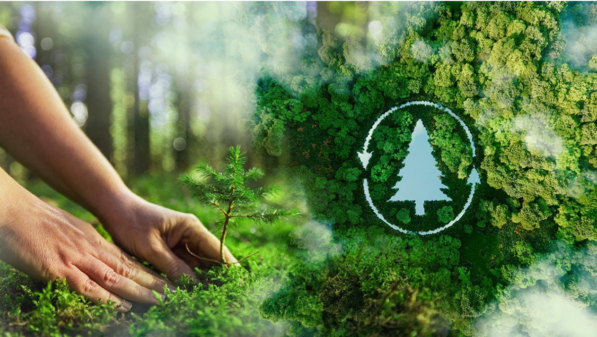
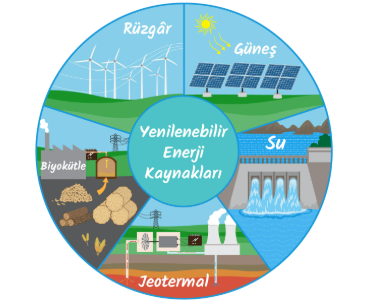
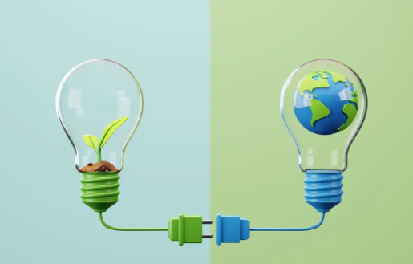
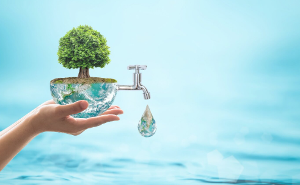
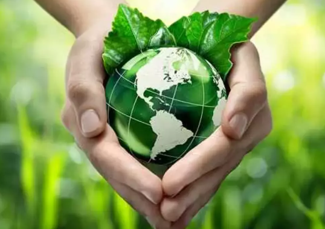
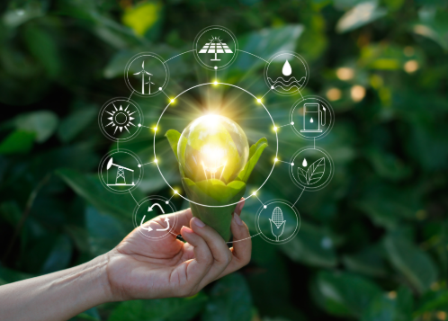

Gezegenimizi Koru, Geleceğini Koru
Doğayı korumak geleceği korumaktır.
Çözümler ve Önlemler
1. Yenilenebilir Enerji Kullanımı
- Güneş, rüzgar, hidroelektrik ve jeotermal enerji kaynaklarının yaygınlaştırılması
- Fosil yakıtlara bağımlılığı azaltarak karbon emisyonlarını düşürmek
2. Enerji Tasarrufu
- Evlerde LED ampuller, enerji verimli cihazlar kullanmak
- Gereksiz elektrik kullanımını azaltmak
- İş yerlerinde ve okullarda enerji verimliliğini artıracak sistemler kurmak
3. Atık Yönetimi ve Geri Dönüşüm
- Plastik, cam, kağıt ve metal atıkları ayrıştırmak
- Organik atıkları kompost yapmak
- Tek kullanımlık ürünleri azaltmak
4. Ağaçlandırma ve Yeşil Alanlar
- Şehirlerde ve köylerde ağaç dikme projeleri
- Ormanları koruma ve yeni orman alanları oluşturma
- Park ve bahçelerin çoğaltılması
5. Tarımda Sürdürülebilir Uygulamalar
- Organik tarım ve doğal gübre kullanımı
- Su tasarrufu sağlayan sulama sistemleri (damla sulama gibi)
- Yerel ve mevsimlik ürünlerin tercih edilmesi
6. Ulaşımda Çevre Dostu Yaklaşımlar
- Toplu taşıma araçlarının kullanılması
- Bisiklet ve yürüyüşün teşvik edilmesi
- Elektrikli araçların kullanımının artırılması
7. Su Kaynaklarının Korunması
- Su tasarrufu: muslukları açık bırakmamak, yağmur suyunu biriktirmek
- Kirli suyun doğaya karışmasını önlemek
- Nehir ve göl temizliği çalışmaları
8. Farkındalık ve Eğitim
- Okullarda ve topluluklarda çevre eğitimleri düzenlemek
- İklim değişikliği ile ilgili kampanyalara katılmak
- Sosyal medyada çevre dostu davranışları yaymak
9. Küresel İş Birliği
- Ülkeler arası iklim anlaşmalarına destek olmak
- Sera gazı azaltım hedeflerini uygulamak
- Uluslararası fon ve projelerle sürdürülebilir kalkınmayı desteklemek
10. Teknoloji ve İnovasyon
- Karbon yakalama ve depolama teknolojilerini geliştirmek
- Enerji verimliliğini artıracak yenilikçi çözümler üretmek
- Çevre dostu malzemeler ve ürünler geliştirmek